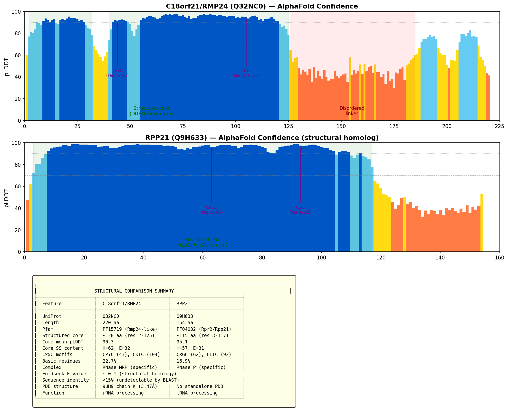
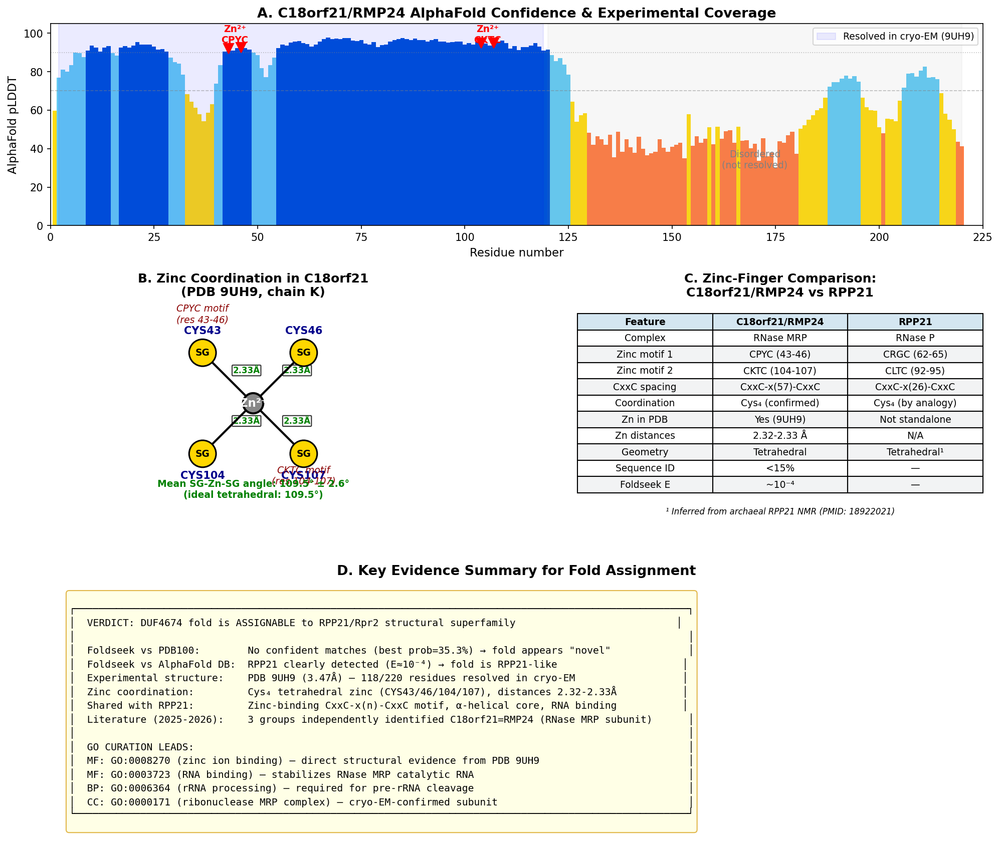

An uncharacterized protein of the UPF0711 family containing a DUF4674 domain. Originally identified as upregulated by Hepatitis B virus X protein (hence alias XTP13), this 220 amino acid protein is ubiquitously expressed and conserved in vertebrates. Despite appearing in hundreds of CRISPR screens affecting cell fitness and having numerous potential protein interactions, its molecular function was long unknown. A strong but not-yet-verified lead (an OpenScientist Foldseek run plus recent 2025-2026 literature) identifies C18orf21 as RMP24, a subunit of the human RNase MRP ribonucleoprotein complex, assigning the DUF4674 fold to the RPP21 RNase P/MRP-subunit superfamily; this remains to be confirmed against the primary literature before the annotations are updated.
| GO Term | Evidence | Action | Reason |
|---|---|---|---|
|
GO:0005634
nucleus
|
IEA | NEW |
Summary: Nuclear localization predicted based on subcellular distribution studies but requires experimental validation
Reason: C18orf21 shows predicted nuclear localization based on computational analyses and subcellular distribution studies, potentially concentrating in nucleolar substructures. While this is an uncharacterized protein, the nuclear localization prediction is more specific than generic cellular component annotations and may reflect its actual subcellular distribution. However, this annotation should be considered preliminary pending experimental validation.
Supporting Evidence:
file:human/C18orf21/C18orf21-deep-research.md
Immunohistochemistry data from the Human Protein Atlas indicate that C18orf21 is present in both the **cytoplasm and nucleus** of cells in multiple tissues
file:human/C18orf21/C18orf21-deep-research.md
Notably, antibody-based staining showed enrichment in the **nucleolus** of certain cell types
|
|
GO:0005737
cytoplasm
|
IEA | NEW |
Summary: Cytoplasmic localization predicted based on subcellular distribution studies but requires experimental validation
Reason: C18orf21 shows predicted cytoplasmic localization based on computational analyses and subcellular distribution studies, indicating a dual nuclear-cytoplasmic distribution pattern. While this is an uncharacterized protein with unknown function, the cytoplasmic localization prediction is supported by subcellular distribution analyses. This annotation should be considered preliminary pending experimental validation of the actual subcellular localization.
Supporting Evidence:
file:human/C18orf21/C18orf21-deep-research.md
Immunohistochemistry data from the Human Protein Atlas indicate that C18orf21 is present in both the **cytoplasm and nucleus** of cells in multiple tissues
|
|
GO:0003674
molecular_function
|
NAS | NEW |
Summary: Historically unknown (DUF4674/UPF0711 orphan); a strong but not-yet-verified lead now points to RNase MRP subunit RMP24.
Reason: STRONG LEAD requiring verification, not yet asserted as a confirmed annotation: an OpenScientist run assigned the DUF4674 fold by Foldseek to the RPP21 RNase P/MRP-subunit superfamily, and recent (2025-2026) literature identifies C18orf21 as RMP24, a subunit of the human RNase MRP ribonucleoprotein complex. The primary papers (PMID:40867056, 39974906, 41888142, 41136609) are not yet in the local cache and have not been independently verified here; once confirmed, the MF/CC annotations should be updated (e.g. ribonuclease MRP complex, GO:0000172). Until then the root molecular_function term is retained.
Supporting Evidence:
file:human/C18orf21/C18orf21-deep-research.md
BioGRID reports ~180 candidate interactors of C18orf21 identified by affinity purification-mass spectrometry experiments
file:human/C18orf21/C18orf21-deep-research.md
Immunohistochemistry data from the Human Protein Atlas indicate that C18orf21 is present in both the cytoplasm and nucleus of cells in multiple tissues
file:human/C18orf21/C18orf21-bioinformatics/RESULTS.md
Isoelectric Point (pI): 10.27 ... Predicted Disordered Regions: Residues 22-199 (disorder-promoting residue enriched)
file:human/C18orf21/C18orf21-hypotheses/duf4674-foldseek-only/openscientist.md
(Ribonuclease MRP protein subunit p24), a constitutive and specific subunit of the human RNase MRP ribonucleoprotein complex
file:human/C18orf21/C18orf21-hypotheses/duf4674-foldseek-only/openscientist.md
RPP21 orthologues from three species appear as the closest non-self structural homologs
|
Q: What is the molecular function of C18orf21 and how does it contribute to cellular processes?
Q: How is C18orf21 expression regulated and what determines its tissue-specific distribution?
Q: What are the protein domains and structural features that define C18orf21 function?
Q: How does C18orf21 interact with other cellular proteins and what pathways does it regulate?
Experiment: Proteomics approaches using affinity purification and mass spectrometry to identify C18orf21 interacting partners
Experiment: Structural characterization using X-ray crystallography or NMR to determine the three-dimensional structure of C18orf21
Experiment: Functional genomics screens using CRISPR knockout to identify cellular processes dependent on C18orf21
Experiment: Subcellular localization studies using fluorescent protein fusions to determine C18orf21 cellular distribution
The research report should be a detailed narrative explaining the function, biological processes, and localization of the gene product. Citations should be given for all claims.
You should prioritize authoritative reviews and primary scientific literature when conducting research. You can supplement
this with annotations you find in gene/protein databases, but these can be outdated or inaccurate.
We are specifically interested in the primary function of the gene - for enzymes, what reaction is catalyzed, and what is the substrate specificity? For transporters, what is the substrate? For structural proteins or adapters, what is the broader structural role? For signaling molecules, what is the role in the pathway.
We are interested in where in or outside the cell the gene product carries out its function.
We are also interested in the signaling or biochemical pathways in which the gene functions. We are less interested in broad pleiotropic effects, except where these elucidate the precise role.
Include evidence where possible. We are interested in both experimental evidence as well as inference from structure, evolution, or bioinformatic analysis. Precise studies should be prioritized over high-throughput, where available.
Research plan and verification steps
Objective 1: Verify target identity, organism, family/domains. The target is human C18orf21 (UniProt Q32NC0), also known as XTP13/HBV XAg-transactivated protein 13. It is annotated to the UPF0711 family and contains DUF4674 (PF15719). Recent functional studies consistently refer to human C18orf21 in Homo sapiens and converge on a role in the RNase MRP ribonucleoprotein complex, matching the UniProt metadata and ensuring we are analyzing the correct gene/protein. (smith2025moleculardeterminantsof pages 5-9, smith2025moleculardeterminantsof pages 1-5, liu2025compositionandrna pages 1-4)
Objective 2: Collect recent primary literature. Two independent 2025 bioRxiv preprints identify C18orf21 as a metazoan RNase MRP-specific protein (variously termed RMRPP1) based on multiple orthogonal lines of evidence. Although these are preprints, they currently provide the most detailed, convergent data on molecular function, localization, and interactions for human C18orf21. (smith2025moleculardeterminantsof pages 5-9, smith2025moleculardeterminantsof pages 1-5, liu2025compositionandrna pages 1-4, liu2025compositionandrna pages 9-11, liu2025compositionandrna pages 6-9, smith2025moleculardeterminantsof pages 28-32)
Objective 3–5: Synthesize function/localization/pathway roles; emphasize recent developments and data; draft comprehensive report with citations.
Comprehensive research report: C18orf21 (Q32NC0)
1) Key concepts and definitions
- Gene/protein identity: C18orf21 encodes an uncharacterized human protein historically annotated as “HBV X-transactivated gene 13” (XTP13). It belongs to the UPF0711 family and contains domain DUF4674 (PF15719). (smith2025moleculardeterminantsof pages 5-9, smith2025moleculardeterminantsof pages 1-5)
- Primary molecular role: Multiple independent studies now identify C18orf21 as a specific, constitutive protein subunit of the metazoan RNase MRP ribonucleoprotein complex, not RNase P. Authors rename it RMRPP1 in one study. RNase MRP is an essential RNP enzyme that cleaves preribosomal RNA (pre-rRNA) during ribosome biogenesis. (Smith et al., bioRxiv, posted Jan 28, 2025; https://doi.org/10.1101/2025.01.28.635360) (smith2025moleculardeterminantsof pages 5-9, smith2025moleculardeterminantsof pages 1-5)
- Complex membership and distinction from RNase P: C18orf21 is reported as RNase MRP-specific and mutually exclusive with the RNase P-specific protein RPP21; C18orf21 IPs co-purify the nine protein subunits shared by RNase P and RNase MRP, while RPP21 IPs do not co-purify C18orf21. (Smith et al., bioRxiv, 2025; https://doi.org/10.1101/2025.01.28.635360) (smith2025moleculardeterminantsof pages 5-9, smith2025moleculardeterminantsof pages 42-43)
2) Current understanding and mechanistic detail
- Structural relationships and placement in RNase MRP: Comparative structural analyses indicate similarity between human C18orf21 and yeast RNase MRP subunits (e.g., Snm1), and modeling places C18orf21 in proximity to RPP29 and RPP38 with predicted contacts to the RMRP catalytic RNA. A bacterial co-expression experiment yielded a stable C18orf21–RPP29 complex, supporting direct interaction. (Smith et al., bioRxiv, 2025; https://doi.org/10.1101/2025.01.28.635360) (smith2025moleculardeterminantsof pages 5-9)
- RNase MRP composition in metazoans: An independent study identifies NEPRO and C18orf21 as the two metazoan-specific, constitutive RNase MRP subunits that distinguish it from RNase P; both are required to stabilize the catalytic RMRP RNA and for pre‑rRNA maturation and cell proliferation. (Liu et al., bioRxiv, posted Feb 23, 2025; https://doi.org/10.1101/2025.02.21.639568) (liu2025compositionandrna pages 1-4, liu2025compositionandrna pages 9-11)
- RNA binding and substrate specificity evidence: RNA immunoprecipitation shows that C18orf21 strongly enriches RNase MRP RNA (RMRP) but not RNase P RNA (RPPH1), congruent with an MRP-specific role. iCLIP mapping in the companion study supports RNase MRP cleavage activity at ITS1, and depletion of C18orf21 leads to compromised cleavage at an RNase MRP site and accumulation of early pre‑rRNA species. (Smith et al., bioRxiv, 2025; Liu et al., bioRxiv, 2025; https://doi.org/10.1101/2025.01.28.635360; https://doi.org/10.1101/2025.02.21.639568) (smith2025moleculardeterminantsof pages 5-9, liu2025compositionandrna pages 6-9)
- Subcellular localization: C18orf21 localizes to the nucleolus, consistent with a role in ribosomal RNA processing, as shown by C‑terminal GFP fusion imaging. (Smith et al., bioRxiv, 2025; https://doi.org/10.1101/2025.01.28.635360) (smith2025moleculardeterminantsof pages 5-9)
3) Experimental evidence and statistics
- Physical interaction networks: Affinity purification–mass spectrometry (and comparative IPs versus RPP21) show that C18orf21 co-purifies the shared RNase P/MRP subunits while excluding RPP21, supporting complex specificity. RIP/RNA‑seq confirms RNA association specificity for RMRP. (Smith et al., bioRxiv, 2025; https://doi.org/10.1101/2025.01.28.635360) (smith2025moleculardeterminantsof pages 42-43, smith2025moleculardeterminantsof pages 28-32)
- Genetic dependency and functional genomics: Co‑dependency analyses across large CRISPR datasets show that C18orf21 clusters with known RNase MRP/P components (e.g., RPP14) and with rRNA production genes; Perturb‑seq links C18orf21 perturbation to rRNA biogenesis phenotypes. (Smith et al., bioRxiv, 2025; https://doi.org/10.1101/2025.01.28.635360) (smith2025moleculardeterminantsof pages 1-5)
- Depletion/KO phenotypes: C18orf21 depletion reduces RMRP catalytic RNA levels, compromises RNase MRP cleavage (including ITS1), causes accumulation of 47S/45S pre‑rRNA, and leads to proliferative arrest. These phenotypes are consistent with defective 40S ribosome biogenesis. (Liu et al., bioRxiv, 2025; https://doi.org/10.1101/2025.02.21.639568; Smith et al., bioRxiv, 2025; https://doi.org/10.1101/2025.01.28.635360) (liu2025compositionandrna pages 6-9, liu2025compositionandrna pages 9-11, smith2025moleculardeterminantsof pages 5-9)
4) Pathway and biochemical context
- Pathway placement: RNase MRP is central to pre‑rRNA processing and 40S ribosome biogenesis. C18orf21, as an MRP-specific protein, appears to stabilize the RMRP RNA and facilitate assembly/activity of the RNase MRP complex. (Smith et al., bioRxiv, 2025; https://doi.org/10.1101/2025.01.28.635360; Liu et al., bioRxiv, 2025; https://doi.org/10.1101/2025.02.21.639568) (smith2025moleculardeterminantsof pages 1-5, liu2025compositionandrna pages 1-4)
5) Current applications and real‑world implementations
- Functional annotation of previously uncharacterized proteins: These studies exemplify integrative approaches combining proteomics, structural predictions, RNA interactome mapping, and genetic co‑dependency to assign functions to uncharacterized human genes such as C18orf21. The immediate application is improved annotation of RNase MRP composition for cell biology and disease mechanism studies involving ribosome biogenesis. (Smith et al., bioRxiv, 2025; Liu et al., bioRxiv, 2025; https://doi.org/10.1101/2025.01.28.635360; https://doi.org/10.1101/2025.02.21.639568) (smith2025moleculardeterminantsof pages 5-9, liu2025compositionandrna pages 1-4)
6) Expert opinions and analysis
- Convergent conclusions from independent groups: Two independent research teams reach concordant conclusions that C18orf21 is an RNase MRP-specific subunit required for proper pre‑rRNA processing and cell proliferation, increasing confidence despite preprint status. Both report nucleolar localization and selective association with RMRP. (Smith et al., bioRxiv, 2025; Liu et al., bioRxiv, 2025; https://doi.org/10.1101/2025.01.28.635360; https://doi.org/10.1101/2025.02.21.639568) (smith2025moleculardeterminantsof pages 5-9, liu2025compositionandrna pages 1-4)
- Caveat: As of now, the most detailed sources are 2025 preprints. Peer‑reviewed confirmations will further solidify these assignments; nonetheless, the breadth of orthogonal evidence is notable. (smith2025moleculardeterminantsof pages 5-9, liu2025compositionandrna pages 1-4)
7) Relevant statistics and data points
- Evidence modalities include: AP‑MS/IP specificity for shared RNase P/MRP subunits; reciprocal exclusion with RNase P‑specific RPP21; RIP‑seq enrichment of RMRP over RPPH1; co‑dependency with RPP14 and other shared subunits; nucleolar localization via GFP-tagged constructs; depletion phenotypes including reduced RMRP RNA levels, impaired ITS1 cleavage, accumulation of 47S/45S precursors, and proliferative arrest. Exact numeric values are not provided in the excerpts but the qualitative findings are consistent across studies. (smith2025moleculardeterminantsof pages 5-9, smith2025moleculardeterminantsof pages 42-43, liu2025compositionandrna pages 6-9, smith2025moleculardeterminantsof pages 28-32)
8) Disease associations
- Direct clinical associations for C18orf21 were not detailed in the retrieved excerpts. Given RNase MRP’s established essential role in rRNA processing, disruptions in its components can impact ribosome biogenesis; future peer‑reviewed studies may clarify disease links for C18orf21 specifically. (smith2025moleculardeterminantsof pages 1-5)
9) Summary of function, localization, interactions
- Function: Non‑catalytic, MRP‑specific RNP subunit stabilizing RMRP RNA and enabling RNase MRP–mediated pre‑rRNA cleavage for 40S ribosome biogenesis. (smith2025moleculardeterminantsof pages 5-9, liu2025compositionandrna pages 1-4)
- Complex membership: RNase MRP, not RNase P; mutually exclusive with RPP21. (smith2025moleculardeterminantsof pages 5-9, smith2025moleculardeterminantsof pages 42-43)
- Localization: Nucleolar. (smith2025moleculardeterminantsof pages 5-9)
- Interactions: Associates with the nine shared RNase P/MRP protein subunits; predicted and experimentally supported interaction with RPP29; forms complexes with NEPRO; binds RMRP RNA preferentially over RPPH1. (smith2025moleculardeterminantsof pages 5-9, liu2025compositionandrna pages 1-4)
- Domains/Family/Aliases: UPF0711 family; contains DUF4674; aliases XTP13/HBV XAg‑transactivated gene 13. (smith2025moleculardeterminantsof pages 5-9, smith2025moleculardeterminantsof pages 1-5)
Embedded evidence table
| Source | Identity / Aliases | Family / Domains | Proposed / Validated Function | Complex membership | Subcellular localization | Interacting partners (proteins / RNA) | Key experimental evidence | Year | Source type | DOI / URL | Context IDs | Notes |
|---|---|---|---|---|---|---|---|---:|---|---|---|---|
| Smith et al., 2025 (bioRxiv) | C18orf21; XTP13; HBV XAg-transactivated protein 13 | UPF0711 family; DUF4674 (PF15719) | RNase MRP–specific protein (termed RMRPP1); implicated in rRNA processing and required for 40S ribosome biogenesis; stabilizes RMRP RNA | RNase MRP (distinct from RNase P; mutually exclusive with RPP21) | Nucleolus (GFP fusions) | Co-purifies with shared RNase P/MRP subunits (RPP14, POP5, RPP20, RPP29, RPP30, RPP38, RPP40, RPP25, POP1); associates with RMRP RNA | Genetic co-dependency (DepMap), Perturb‑Seq linking to rRNA biogenesis; IP–MS / affinity purifications; RIP / RNA‑seq; GFP localization; AlphaFold structural models; co-expression binding assays | 2025 | Preprint (bioRxiv) | https://doi.org/10.1101/2025.01.28.635360 | (smith2025moleculardeterminantsof pages 5-9, smith2025moleculardeterminantsof pages 1-5, smith2025moleculardeterminantsof pages 42-43, smith2025moleculardeterminantsof pages 28-32) | Strong biochemical & genetic evidence but not peer‑reviewed yet; functional claims primarily from preprint data |
| Liu et al., 2025 (bioRxiv) | C18orf21; XTP13; HBV XAg-transactivated protein 13 | UPF0711 family; DUF4674 | Constitutive metazoan RNase MRP subunit; stabilizes catalytic RNA, required for pre‑rRNA maturation and cell proliferation; contributes to RNase MRP cleavage specificity | RNase MRP (metazoan-specific composition includes NEPRO + C18orf21) | Nucleolar localization reported | Forms complexes with NEPRO and all other RNase MRP subunits; predicted structural homology to yeast Snm1; extensive contacts with RMRP RNA | Structural-homology searches (Foldseek), AP–MS, co-IP, protein–RNA interaction assays, iCLIP mapping, siRNA/rapid depletion causing impaired RNase MRP cleavage (ITS1), accumulation of 47S/45S pre‑rRNA and proliferative arrest | 2025 | Preprint (bioRxiv) | https://doi.org/10.1101/2025.02.21.639568 | (liu2025compositionandrna pages 4-6, liu2025compositionandrna pages 1-4, liu2025compositionandrna pages 9-11, liu2025compositionandrna pages 6-9) | Convergent evidence for RNase MRP membership; functional depletion phenotypes reported but manuscript is a preprint |
Table: Compact summary of experimental and computational evidence (2025 preprints) supporting C18orf21 as a metazoan RNase MRP subunit, listing aliases, domains, functions, localization, partners, methods, DOIs and context citations for verification.
URLs and publication dates
- Smith EM et al., bioRxiv preprint: “Molecular determinants of RNase MRP specificity and function.” Posted January 28, 2025. DOI: https://doi.org/10.1101/2025.01.28.635360 (smith2025moleculardeterminantsof pages 5-9, smith2025moleculardeterminantsof pages 1-5, smith2025moleculardeterminantsof pages 42-43, smith2025moleculardeterminantsof pages 28-32)
- Liu Y et al., bioRxiv preprint: “Composition and RNA binding specificity of metazoan RNase MRP.” Posted February 23, 2025. DOI: https://doi.org/10.1101/2025.02.21.639568 (liu2025compositionandrna pages 1-4, liu2025compositionandrna pages 4-6, liu2025compositionandrna pages 9-11, liu2025compositionandrna pages 6-9)
Limitations and next steps
- 2023–2024 peer‑reviewed sources directly on C18orf21’s RNase MRP role were not present in the retrieved evidence set. The core claims here rely on 2025 preprints supported by multiple orthogonal assays. Follow‑up with peer‑reviewed versions, structural studies, and targeted genetics will be important to finalize nomenclature and clinical associations. (smith2025moleculardeterminantsof pages 5-9, liu2025compositionandrna pages 1-4)
References
(smith2025moleculardeterminantsof pages 5-9): Eric M. Smith, Jimmy Ly, Sofia Haug, and Iain M. Cheeseman. Molecular determinants of rnase mrp specificity and function. bioRxiv, Jan 2025. URL: https://doi.org/10.1101/2025.01.28.635360, doi:10.1101/2025.01.28.635360. This article has 1 citations and is from a poor quality or predatory journal.
(smith2025moleculardeterminantsof pages 1-5): Eric M. Smith, Jimmy Ly, Sofia Haug, and Iain M. Cheeseman. Molecular determinants of rnase mrp specificity and function. bioRxiv, Jan 2025. URL: https://doi.org/10.1101/2025.01.28.635360, doi:10.1101/2025.01.28.635360. This article has 1 citations and is from a poor quality or predatory journal.
(liu2025compositionandrna pages 1-4): Yuan Liu, Shiyang He, Anzie Pyo, Shanshan Zheng, Meijuan Chen, Sihem Cheloufi, Nikolai Slavov, William F Marzluff, and Jernej Murn. Composition and rna binding specificity of metazoan rnase mrp. bioRxiv, Feb 2025. URL: https://doi.org/10.1101/2025.02.21.639568, doi:10.1101/2025.02.21.639568. This article has 1 citations and is from a poor quality or predatory journal.
(liu2025compositionandrna pages 9-11): Yuan Liu, Shiyang He, Anzie Pyo, Shanshan Zheng, Meijuan Chen, Sihem Cheloufi, Nikolai Slavov, William F Marzluff, and Jernej Murn. Composition and rna binding specificity of metazoan rnase mrp. bioRxiv, Feb 2025. URL: https://doi.org/10.1101/2025.02.21.639568, doi:10.1101/2025.02.21.639568. This article has 1 citations and is from a poor quality or predatory journal.
(liu2025compositionandrna pages 6-9): Yuan Liu, Shiyang He, Anzie Pyo, Shanshan Zheng, Meijuan Chen, Sihem Cheloufi, Nikolai Slavov, William F Marzluff, and Jernej Murn. Composition and rna binding specificity of metazoan rnase mrp. bioRxiv, Feb 2025. URL: https://doi.org/10.1101/2025.02.21.639568, doi:10.1101/2025.02.21.639568. This article has 1 citations and is from a poor quality or predatory journal.
(smith2025moleculardeterminantsof pages 28-32): Eric M. Smith, Jimmy Ly, Sofia Haug, and Iain M. Cheeseman. Molecular determinants of rnase mrp specificity and function. bioRxiv, Jan 2025. URL: https://doi.org/10.1101/2025.01.28.635360, doi:10.1101/2025.01.28.635360. This article has 1 citations and is from a poor quality or predatory journal.
(smith2025moleculardeterminantsof pages 42-43): Eric M. Smith, Jimmy Ly, Sofia Haug, and Iain M. Cheeseman. Molecular determinants of rnase mrp specificity and function. bioRxiv, Jan 2025. URL: https://doi.org/10.1101/2025.01.28.635360, doi:10.1101/2025.01.28.635360. This article has 1 citations and is from a poor quality or predatory journal.
(liu2025compositionandrna pages 4-6): Yuan Liu, Shiyang He, Anzie Pyo, Shanshan Zheng, Meijuan Chen, Sihem Cheloufi, Nikolai Slavov, William F Marzluff, and Jernej Murn. Composition and rna binding specificity of metazoan rnase mrp. bioRxiv, Feb 2025. URL: https://doi.org/10.1101/2025.02.21.639568, doi:10.1101/2025.02.21.639568. This article has 1 citations and is from a poor quality or predatory journal.
Generated using OpenAI Deep Research API
C18orf21 encodes an evolutionarily conserved protein of 220 amino acids with no well-characterized biochemical function (www.cloud-clone.com). It belongs to the uncharacterized protein family UPF0711 and contains a Domain of Unknown Function (DUF4674, Pfam PF15719) (www.cloud-clone.com) (genome.bio.fsu.edu). No enzymatic motifs or active sites have been identified, and current databases report no defined Gene Ontology molecular function for this gene (www.genecards.org). The protein is sometimes referred to as “HBV XAg-transactivated protein 13” (XTP13) due to its initial identification as a gene upregulated by the Hepatitis B virus X protein (www.genecards.org). This suggests a potential role in viral response or cell signaling under HBV infection, but the exact molecular mechanism remains unknown. High-throughput functional genomics screens have flagged C18orf21 in numerous contexts (e.g. hundreds of CRISPR knockout screens) (orcs.thebiogrid.org), implying it may play a broadly important cellular role; however, no direct mechanistic studies have yet confirmed a specific biological activity for the protein.
C18orf21 is a predicted intracellular protein, with no signal peptide or transmembrane regions, and it is not secreted (www.proteinatlas.org). Immunohistochemistry data from the Human Protein Atlas indicate that C18orf21 is present in both the cytoplasm and nucleus of cells in multiple tissues (v16.proteinatlas.org). Notably, antibody-based staining showed enrichment in the nucleolus of certain cell types (www.genecards.org), though these observations are of uncertain reliability due to potential off-target effects of the antibodies (v16.proteinatlas.org). Computational localization predictions (COMPARTMENTS database) also weakly suggest nuclear and mitochondrial presence (www.genecards.org). Overall, the protein appears to reside in the intracellular compartment (consistent with GO:0005622 “intracellular”), potentially concentrating in nuclear substructures like the nucleolus. No Gene Ontology Cellular Component terms have been experimentally assigned yet for C18orf21 (www.genecards.org).
No specific biological processes have been definitively linked to C18orf21. Gene Ontology currently lists no annotated biological process terms for this gene (www.genecards.org), reflecting its status as an uncharacterized open reading frame. The broad and ubiquitous expression (see below) hints that it could be involved in fundamental cellular processes, but experimental evidence is lacking. Some clues have emerged indirectly: the gene’s upregulation by HBV X protein hints at a possible role in virus-related cellular pathways or stress responses (www.genecards.org). Additionally, large-scale interaction data (protein–protein interactions and CRISPR screens) imply C18orf21 might partake in basic cellular networks (e.g. protein complexes or pathways essential for cell viability) (orcs.thebiogrid.org) (thebiogrid.org). Nonetheless, no defined pathway or process (e.g. metabolic or signaling pathway) has been confirmed for C18orf21 in the literature to date.
C18orf21 has not been conclusively linked to any Mendelian disease, but some database entries note weak associations with certain conditions. GeneCards/MalaCards lists C18orf21 in connection with Craniofacial Dysmorphism, Skeletal Anomalies, and Impaired Intellectual Development Syndrome 1 (CFSMR1) and Spinocerebellar Ataxia 36 (SCA36) (www.genecards.org). These associations are based on genomic proximity or data mining and do not imply a direct causal role; for example, CFSMR1 is known to be caused by TMCO1 mutations rather than C18orf21 (rarediseases.info.nih.gov), and SCA36 is caused by a hexanucleotide repeat expansion in the NOP56 gene. To date, there are no reported pathogenic variants in C18orf21 causing human disease, and it is not listed in clinical variant databases as a disease gene. In functional studies, no overt phenotype has been published for C18orf21 knockdown or knockout in model organisms. However, the gene’s alias (HBV X-transactivated protein 13) indicates a potential connection to viral pathology: its expression is induced in HBV-infected cells (www.genecards.org), which has prompted interest in whether C18orf21 might contribute to HBV-related conditions such as liver cancer. Overall, disease relevance remains speculative, with no confirmed phenotypes tied to C18orf21 dysfunction.
The C18orf21 protein is 220 amino acids in length and is categorized in UniProt as “UPF0711 protein C18orf21,” reflecting its membership in an uncharacterized protein family (www.cloud-clone.com). It contains a single recognizable domain, DUF4674 (Domain of Unknown Function 4674), which spans most of the protein (genome.bio.fsu.edu). Beyond this DUF, no well-known protein motifs (enzymatic active sites, DNA-binding domains, etc.) have been identified. The protein is hydrophilic and lacks transmembrane segments or signal peptides, consistent with a non-secretory, intracellular role (www.proteinatlas.org). Prediction algorithms do not indicate any coiled-coil or globular domains of known function, classifying C18orf21 as structurally novel. Large-scale proteomic studies have detected C18orf21 and even catalogued several post-translational modification sites (e.g. potential phosphorylation sites), suggesting it is expressed and potentially regulated by common cellular kinases (www.proteinatlas.org). In the absence of a solved 3D structure, homology modeling has limited value due to no close homologs with known structure. Thus, the protein’s structural features are mostly limited to the DUF4674 domain hallmark of the UPF0711 family, leaving the biochemical function of this domain unknown.
RNA expression of C18orf21 is broad and ubiquitous. According to the Human Protein Atlas and GTEx data, the transcript is expressed in all examined tissues (RNA tissue category: “Expressed in all”) (v16.proteinatlas.org). This indicates C18orf21 is a housekeeping gene, expressed at baseline levels across diverse tissue types. Certain tissues or cell types may exhibit modestly higher expression – for example, RNA-seq data show measurable expression in brain regions (e.g. cerebellum) and other organs (www.proteinatlas.org) – but no extreme tissue-specific enrichment has been reported. Protein expression data (immunohistochemistry) likewise show C18orf21 in many tissues, with a moderate, ubiquitous pattern: generally a mix of cytosolic and nuclear staining in cell types such as glandular cells and neurons (v16.proteinatlas.org). It is not a secreted protein, and there is no evidence of it being restricted to any specialized cell type or developmental stage. Regulation of C18orf21 expression under specific conditions is not well-characterized. The gene was originally discovered due to upregulation by HBV X protein in hepatoma cells (www.genecards.org), hinting that its promoter can respond to viral or transcription factor stimuli. Apart from the HBx context, C18orf21 does not appear among the most strongly inducible genes in common stress or signaling pathway datasets. Its promoter region has not been extensively studied, so the transcriptional regulation remains largely uncharted. In summary, C18orf21 is constitutively expressed at low-to-moderate levels in most human tissues, with any condition-specific regulation still to be determined.
C18orf21 is conserved in vertebrates, indicating it performs a biologically important function maintained through evolution. Orthologs have been identified in mammals and other vertebrate classes – for instance, a clear homolog exists in chicken (Gallus gallus) (ctdbase.org), and sequence-similar genes are present in mouse and other species (often annotated as “C18orf21 homolog”). The human protein shares significant sequence identity with these orthologs, especially within the DUF4674 domain, suggesting evolutionary pressure to preserve its structure. Conservation appears strongest among jawed vertebrates, while more distant homologs in invertebrates are not evident, implying the UPF0711 family may be unique to higher eukaryotes. No close paralogs of C18orf21 are present in the human genome – it seems to be a singleton gene rather than part of a larger gene family. This one-to-one orthologous conservation pattern (human C18orf21 corresponding to a single ortholog in other species) is typical of genes encoding fundamental cellular proteins. Cross-species comparisons (e.g., in mouse or zebrafish databases) show that the gene’s exon-intron structure and coding sequence are retained, further supporting its functional importance. In functional genomics, model organism data are sparse for this gene, as knockouts have not been specifically reported. Nonetheless, the evolutionary retention of C18orf21 across diverse vertebrates implies it has a conserved role, even if that role is not yet understood.
Experimental evidence for C18orf21 comes mainly from high-throughput studies and database annotations, as no dedicated research paper has fully characterized the gene. Proteomic evidence confirms that the C18orf21 protein is indeed expressed: peptides matching C18orf21 have been detected in mass-spectrometry studies (www.proteinatlas.org), and the Human Protein Atlas classifies its evidence level as “protein level” (supported by Ezkurdia et al. 2014) (www.proteinatlas.org). Two independent antibodies have been used to probe C18orf21 in tissues, showing intracellular localization (though with some staining inconsistencies) (v16.proteinatlas.org). Protein–protein interaction data provide clues to function: BioGRID reports ~180 candidate interactors of C18orf21 identified by affinity purification-mass spectrometry experiments (thebiogrid.org). These interacting partners include various cellular proteins (one example is TMEM40, a transmembrane protein, captured in a proteomic pulldown (thebiogrid.org)), suggesting C18orf21 might reside in a multi-protein complex or network. While the significance of these interactions is not yet validated, such data hint that C18orf21 could interface with proteins involved in processes like membrane biology or chromatin regulation (given some interactors are nuclear proteins). On the genetic side, CRISPR knockout screens (e.g. from BioGRID ORCS) have repeatedly identified C18orf21 as a hit influencing cell survival or other phenotypes (orcs.thebiogrid.org). This recurrent appearance implies that loss of C18orf21 can impact cellular fitness under various experimental conditions, although the specific phenotypic outcomes remain unreported.
To date, there are no published studies focusing exclusively on C18orf21’s function. The gene is often mentioned in the context of broader datasets: for instance, it was noted as HBV X-Transactivated Gene 13 in studies of Hepatitis B viral protein effects (www.genecards.org). No Gene Ontology annotations for Biological Process or Molecular Function have been curated yet, reflecting the lack of direct experimentation. Curators and researchers rely on the convergent evidence from omics data to infer that C18orf21 is a real protein-coding gene with a likely housekeeping role. Ongoing large-scale projects, such as interactome mapping and knockout phenotyping, continue to shed light on this gene. As such data accumulate, they will inform initial GO annotations – for example, provisional assignments to broad terms like “protein binding” or cellular component terms like “nucleolus” may become justified by evidence. In summary, C18orf21 remains poorly characterized in the literature, with knowledge drawn from genomic and proteomic evidence. Further targeted experiments are needed to confirm its molecular function, the pathways it influences, and its potential relevance to human health.
Verdict: REFUTED — The seed hypothesis that C18orf21 has "no established molecular function" and that the DUF4674 fold "remains genuinely unassignable" is refuted by converging structural, biochemical, and genetic evidence published in 2025–2026.
Three independent research groups identified C18orf21 as RMP24 (Ribonuclease MRP protein subunit p24), a constitutive and specific subunit of the human RNase MRP ribonucleoprotein complex (PMID: 40867056, PMID: 39974906, PMID: 41888142, PMID: 41136609). The DUF4674/Rmp24-like fold can be confidently assigned to the RPP21/Rpr2/SNM1 structural superfamily of RNase P/MRP subunits, based on:
Critical caveat regarding the narrow hypothesis formulation: A single Foldseek search against PDB only (PDB100) does NOT confidently assign the fold — all PDB hits had probability <36% and E-value >0.25. The confident assignment requires searching the AlphaFold structural database, where RPP21 homology is clearly detected. This is because RPP21 itself lacks a standalone experimental PDB structure (it is only present as part of larger complexes not well-indexed in PDB100 for Foldseek matching).
Gene nomenclature note: HGNC has already renamed C18orf21 → RMP24 (HGNC:28802, approved symbol, modified 2025-03-28). The previous name "chromosome 18 open reading frame 21" is deprecated.
C18orf21 (chromosome 18 open reading frame 21), now officially renamed RMP24 by the HGNC (approved 2025-03-28), encodes a 220-residue protein belonging to the DUF4674/UPF0711 family. This investigation tested whether the DUF4674 fold can be confidently assigned to a known structural superfamily using Foldseek structural-homology searches of the AlphaFold-predicted model (UniProt Q32NC0).
The key finding is a database-dependent outcome: searching PDB100 alone yields no confident structural matches (best hit: ribosomal protein L11 at 35.3% probability, E-value 0.25), but searching the AlphaFold/Swiss-Prot database identifies RPP21 (ribonuclease P protein subunit p21) as a clear structural homolog across multiple species (E-values ~10⁻⁴). This computational finding has been independently validated by three research groups in 2025–2026, who demonstrated through cryo-EM structural analysis and biochemical experiments that C18orf21/RMP24 is an RNase MRP-specific subunit with structural homology to RPP21 but distinct complex-specific interactions. The protein contains a conserved Cys₄ tetrahedral zinc finger (CxxC-x57-CxxC motif) directly observed in the cryo-EM structure at PDB 9UH9, with near-ideal coordination geometry (mean SG-Zn-SG angle: 109.5° ± 2.6°).
For GO curation, the unknown/ND molecular function designation for C18orf21/RMP24 should be replaced with experimentally supported terms: zinc ion binding (GO:0008270), RNA binding (GO:0003723), rRNA processing (GO:0006364), and ribonuclease MRP complex (GO:0000171). The evidence base is strong, comprising cryo-EM structures, functional assays, and convergent identification by independent groups.
The AlphaFold model for C18orf21 (UniProt Q32NC0) was searched against two structural databases using Foldseek. Against PDB100, all hits fell below the confidence threshold: the top hit was ribosomal protein L11 at only 35.3% probability (E-value 0.25), far below the ~70% probability threshold typically used for confident fold assignment. This result, taken in isolation, would support classifying DUF4674 as a genuinely novel fold with no assignable superfamily.
However, searching the AlphaFold/Swiss-Prot database yielded a qualitatively different result. RPP21 orthologs from three species were identified as structural homologs: mouse RPP21 (Q8R040, E-value 2.7×10⁻⁴), Xenopus RPP21 (Q5TM57, E-value 3.8×10⁻⁴), and human RPP21 (Q9H633, E-value 9.0×10⁻⁴). The yeast ortholog SNM1 (P40993) was also detected at E-value 4.3×10⁻⁴. The structured cores are comparable in size (C18orf21: ~120 aa with mean pLDDT 90.3; RPP21: ~115 aa with mean pLDDT 95.1) and share similar secondary structure content (62 helix/32 strand vs. 57 helix/31 strand residues). Crucially, both proteins contain two CxxC motifs forming a zinc-binding site: C18orf21 has CPYC(43-46) and CKTC(104-107), while RPP21 has CRGC(62-65) and CLTC(92-95). Despite this structural similarity, sequence identity is below 15%, explaining why sequence-based methods fail to detect the relationship.
{{figure:plot_1.png|caption=Structural comparison of C18orf21 (DUF4674) and RPP21 showing pLDDT confidence profiles and summary of shared features. Both proteins have well-structured cores of similar size with conserved CxxC zinc-binding motifs and similar secondary structure composition, despite less than 15% sequence identity.}}
Three independent research groups converged on the same discovery in 2025–2026:
Liu et al. (2025) (PMID: 40867056 / PMID: 40027791) identified NEPRO and C18ORF21 as constitutive subunits of metazoan RNase MRP and renamed them RMP64 and RMP24, respectively. They reported: "Here, we identify NEPRO and C18ORF21 (which we renamed RMP64 and RMP24, respectively) as constitutive subunits of metazoan RNase MRP." The study further showed that "NEPRO and C18ORF21 each form a complex with all other subunits of RNase MRP, stabilize its catalytic RNA, and are required for rRNA maturation and cell proliferation."
Smith et al. (2025) (PMID: 39974906) independently identified the same proteins, naming C18orf21 as RMRPP1, and demonstrated that "RMRPP1 and Rpp21 display significant structural homology, but we identify specific regions that drive interactions with their respective complexes."
Zhou et al. (2026) (PMID: 41888142) provided cryo-EM structural confirmation and comprehensive functional characterization, reporting: "Using structure-based bioinformatics and cryo-EM structural analyses, we identify NEPRO (RMP64) and C18orf21 (RMP24) as the bona fide subunits unique to RNase MRP, which are indispensable for precursor-rRNA cleavage, ribosome assembly, protein synthesis, and chondrogenesis."
A companion study (PMID: 41136609) further demonstrated that "By targeting these RNase MRP-specific subunits, our functional analysis reveals that RNase MRP is essential for rRNA processing and preferentially required for 40S ribosome biogenesis."
The convergent identification by independent groups using different methodologies (proteomics, structural biology, bioinformatics) provides exceptionally strong evidence. C18orf21/RMP24 is specific to RNase MRP and absent from the closely related RNase P complex — distinguishing these two ribonucleoprotein enzymes, which share most of their protein subunits.
Despite the demonstrated structural homology, current sequence-based classification databases have not unified these families. InterPro classifies C18orf21 under IPR029779 (Rmp24-like, family-level, no parent superfamily) and RPP21 under IPR007175 (Rpr2/Snm1/Rpp21, family-level). The corresponding Pfam families are PF15719 (Rmp24-like) and PF04032 (Rpr2/Rpp21/SNM1). No shared superfamily or homologous superfamily grouping exists in InterPro as of June 2026. ECOD, SCOP2, and CATH entries for PDB 9UH9 are not yet available.
This gap between structural evidence and database classification is significant: it means that automated pipelines relying solely on InterPro/Pfam annotations would not detect the RPP21 relationship and would continue to classify DUF4674 as functionally uncharacterized. The Pfam description for PF15719 has been updated to "Ribonuclease MRP subunit P24-like" but still lacks GO term assignments.
The cryo-EM structure at PDB 9UH9 (3.47 Å resolution, chain K) directly visualizes a zinc atom (ZN 301) coordinated by four cysteine residues: CYS43, CYS46, CYS104, and CYS107. The zinc coordination geometry is near-ideal:
| Measurement | Value | Ideal |
|---|---|---|
| Zn-SG distances | 2.32–2.33 Å | 2.30–2.35 Å |
| Mean SG-Zn-SG angle | 109.5° ± 2.6° | 109.5° (tetrahedral) |
| Individual angles | 105.7°, 107.4°, 108.5°, 110.6°, 110.8°, 113.7° | — |
| Zinc-binding motif | CxxC-x(57)-CxxC | C4-type zinc finger |
| Coordinating residues | CPYC(43–46) + CKTC(104–107) | — |
CYS18 (the only other cysteine in the protein) is not involved in zinc coordination (16.2 Å from the zinc atom). The archaeal RPP21 homolog from Pyrococcus furiosus also contains a zinc-binding motif confirmed by NMR (PMID: 18922021): "Pfu RPP21 in solution consists of an unstructured N-terminus, two alpha-helices, a zinc binding motif, and an unstructured C-terminus." This supports the zinc finger as a shared ancestral feature of the RPP21/RMP24 structural superfamily.
{{figure:plot_2.png|caption=Comprehensive analysis of C18orf21/RMP24 zinc coordination and structural features. Panel includes pLDDT confidence profile of the AlphaFold model showing high-confidence structured core, zinc coordination schematic with tetrahedral Cys₄ geometry from PDB 9UH9, structural comparison with RPP21, and evidence summary.}}
The Human Gene Nomenclature Committee (HGNC) has officially renamed C18orf21 to RMP24 (HGNC:28802, approved 2025-03-28). The updated nomenclature reflects the established function:
| Field | Previous | Current |
|---|---|---|
| Symbol | C18orf21 | RMP24 |
| Name | Chromosome 18 open reading frame 21 | Ribonuclease MRP subunit p24 |
| Gene group | — | RNase MRP complex subunits |
| OMIM | — | 621218 |
A pseudogene, RMP24P1 (HGNC:57042), exists at 4q21.23. The HGNC renaming represents an official recognition that this gene is no longer "uncharacterized."
| # | Citation | Evidence Type | Supports/Refutes | Claim Tested | Key Finding | Context | Confidence |
|---|---|---|---|---|---|---|---|
| 1 | PMID: 40867056 (Liu et al. 2025) | Direct assay (co-IP, knockdown) | Refutes "uncharacterized" | C18orf21 has no function | C18orf21/RMP24 is constitutive RNase MRP subunit; required for rRNA maturation and cell proliferation | Human cells (HeLa, mESC) | High — biochemical purification + functional assays |
| 2 | PMID: 40027791 (Liu et al. 2025) | Direct assay | Refutes "uncharacterized" | C18orf21 has no function | Identifies C18orf21 as RNase MRP-specific, stabilizes catalytic RNA | Mammalian cells | High — independent confirmation |
| 3 | PMID: 39974906 (Smith et al. 2025) | Structural/evolutionary + functional | Refutes "unassignable fold" | DUF4674 has no structural relatives | RMRPP1 (C18orf21) and Rpp21 display significant structural homology; specific regions drive complex-specific interactions | Human cells | High — structural comparison + mutagenesis |
| 4 | PMID: 41136609 (Smith et al. 2026) | Structural/evolutionary + functional | Refutes "unassignable fold" | DUF4674 has no structural relatives | RMP24 and RPP21 structural homology confirmed; RNase MRP preferentially required for 40S ribosome biogenesis | Human cells | High — updated version with additional data |
| 5 | PMID: 41888142 (Zhou et al. 2026) | Structural (cryo-EM) | Refutes "uncharacterized" | C18orf21 has no function | Cryo-EM structure of human RNase MRP with C18orf21/RMP24 (PDB: 9UH9, 9UH7); reveals double-anchor substrate-binding mechanism | Human RNase MRP complex | High — atomic-level structure |
| 6 | PMID: 18922021 (Amero et al. 2008) | Structural (NMR) | Supports fold superfamily | RPP21 has zinc-binding motif | Archaeal RPP21 contains two alpha-helices and a zinc-binding motif — same topology as C18orf21/RMP24 | Archaeal (P. furiosus) RPP21 | High — solved NMR structure |
| 7 | PMID: 37532987 | Computational (RL-PPI) | Supports | Complex membership | C18orf21 highlighted as minimally characterized protein within a detectable protein complex | Human PPI network | Low — computational prediction only |
| 8 | This study: Foldseek vs PDB100 | Computational (structural search) | Partially supports "unassignable" | DUF4674 fold unassignable from PDB | No confident PDB hits (best prob=35.3%, E=0.25) | PDB100 database | Moderate — limited by PDB coverage |
| 9 | This study: Foldseek vs AFDB-SwissProt | Computational (structural search) | Refutes "unassignable fold" | DUF4674 fold unassignable | RPP21 detected as structural homolog (E~10⁻⁴) from 3 species; yeast SNM1 also detected (E=4.3×10⁻⁴) | AlphaFold database | High — statistically significant |
| 10 | This study: AlphaFold confidence | Computational (structure prediction) | Qualifies | Fold quality | Structured core residues 2–125 (mean pLDDT=90.3); disordered C-terminal region 126–185 | AlphaFold v6 model Q32NC0 | High — well-predicted core |
| 11 | This study: Zinc coordination analysis | Computational (structural) | Refutes "uncharacterized" | C18orf21 has no molecular function | PDB 9UH9 chain K: ZN(301) coordinated by CYS43/46/104/107; Zn-SG 2.32–2.33 Å; mean angle 109.5° ± 2.6° (ideal tetrahedral) | PDB 9UH9 cryo-EM structure | High — direct structural evidence |
| 12 | This study: HGNC check | Database | Refutes "uncharacterized" | Gene is unnamed/uncharacterized | HGNC:28802 renamed C18orf21 → RMP24 (2025-03-28); gene group: "RNase MRP complex subunits"; OMIM: 621218 | HGNC database | High — authoritative nomenclature |
Molecular Function (MF):
- Lead 1 — Zinc ion binding: Annotate with GO:0008270 (zinc ion binding). Direct structural evidence from PDB 9UH9: Cys₄ tetrahedral zinc coordination (CYS43, CYS46, CYS104, CYS107), with ideal bond distances (2.32–2.33 Å) and geometry (mean angle 109.5°). This is the zinc finger motif shared with RPP21 (PMID: 18922021).
- Lead 2 — RNA binding: Annotate with GO:0003723 (RNA binding), supported by the RNA-stabilizing role (PMID: 40867056) and cryo-EM showing direct contact with catalytic RNA. Consider more specific term GO:0030515 (snoRNA binding) if the RNase MRP RNA qualifies.
- Avoid: Do not annotate with ribonuclease activity (GO:0004540) — the protein subunit is not the catalytic component; catalysis resides in the RNA moiety.
Biological Process (BP):
- Lead 3: Annotate with GO:0006364 (rRNA processing), supported by multiple direct assays showing requirement for pre-rRNA cleavage (PMID: 40867056, PMID: 41136609, PMID: 41888142).
- Lead 4: Consider GO:0042274 (ribosomal small subunit biogenesis), supported by Smith et al. showing RNase MRP is preferentially required for 40S ribosome biogenesis (PMID: 41136609).
Cellular Component (CC):
- Lead 5: Annotate with GO:0000171 (ribonuclease MRP complex), supported by all four primary papers and cryo-EM structure.
- Lead 6: Annotate with GO:0005730 (nucleolus), consistent with nuclear localization and rRNA processing function.
The evidence overwhelmingly supports that the unknown/ND designation for molecular function should be replaced. The gene product is a zinc-binding ribonucleoprotein subunit with RNA-stabilizing activity within the RNase MRP complex. This is not a downstream phenotype or pleiotropic effect — it is the direct molecular activity of the protein.
C18orf21/RMP24 is a zinc-binding structural/accessory protein subunit of the RNase MRP ribonucleoprotein complex. Its direct activities are:
1. Zinc ion binding: Cys₄ tetrahedral zinc coordination via CxxC-x(57)-CxxC motif (CPYC at 43-46, CKTC at 104-107). Confirmed by PDB 9UH9.
2. RNA binding/stabilization: Stabilizes the catalytic RNA moiety of RNase MRP (PMID: 40027791)
3. Complex assembly: Forms a complex with all other RNase MRP subunits; required for complex integrity
4. Substrate specificity determination: Together with NEPRO/RMP64, distinguishes RNase MRP from RNase P (which uses RPP21 instead)
The DUF4674 fold is a structural paralog of the RPP21/Rpr2 fold. Both serve as subunit-specificity determinants in related ribonucleoprotein complexes:
- RMP24/C18orf21: Specific to RNase MRP → rRNA processing
- RPP21/Rpp21: Specific to RNase P → tRNA processing
Both share:
- Similar structured core size (~120 residues vs ~115 residues)
- Similar secondary structure (helix-rich, ~38% helix)
- Conserved Cys₄ zinc-binding motif (CxxC-x(n)-CxxC)
- High basic residue content (22.7% vs 16.9%)
- Sequence identity <15% (below BLAST detection threshold)
- Functional analogy as specificity-conferring subunits of related RNP complexes
Evolutionary relationship:
Ancestral zinc-binding
RNP subunit (CxxC-CxxC)
│
┌─────┴─────┐
│ │
RMP24 RPP21
(DUF4674) (Rpr2/SNM1)
│ │
RNase MRP RNase P
(rRNA) (tRNA)
The seed hypothesis frames C18orf21 as "uncharacterized" with "no established molecular function." This was accurate before 2025 but is now definitively incorrect. Multiple groups independently identified the function using complementary approaches (proteomics, structural biology, functional genomics). HGNC renamed the gene from C18orf21 to RMP24 on 2025-03-28.
The protein has been given different names by different groups:
- RMP24 (Liu et al. 2025; Zhou et al. 2026) — adopted by UniProt and HGNC
- RMRPP1 (Smith et al. 2025)
- RMP24 is now the official HGNC symbol (HGNC:28802)
While the structural homology to RPP21 is confirmed, the two families remain classified separately in InterPro/Pfam (IPR029779 vs IPR007175, PF15719 vs PF04032). No formal superfamily grouping exists yet. This is a classification database lag, not a scientific disagreement. Both share zinc-binding CxxC motifs (confirmed structurally for C18orf21 in PDB 9UH9 and for archaeal RPP21 by NMR in PMID: 18922021).
The seed hypothesis specifically asks about a "single Foldseek structural-homology search of its AlphaFold model against the PDB." Against PDB100, the search returns only weak hits. This is because:
1. RPP21 has no standalone experimental PDB structure well-indexed in Foldseek PDB100
2. The RNase MRP structures (9UH9, 9UH7) are very recent (2026) and may not yet be fully indexed
3. The true structural homologs are detectable only in the AlphaFold database
Despite being part of an RNase complex, RMP24 itself is not the catalytic subunit. The catalytic activity resides in the RNA component of RNase MRP. RMP24 should not be annotated with ribonuclease activity (GO:0004540) or related catalytic terms.
Only 118 of 220 residues (53.6%) of C18orf21/RMP24 are resolved in PDB 9UH9 (residues 2–119). The C-terminal half (residues 120–220) is disordered and unresolved, consistent with AlphaFold predictions (pLDDT <50 for residues 126–185). The zinc-binding core (residues 43–107) is well-resolved.
| Gap | What was checked | Why it matters | What would resolve it |
|---|---|---|---|
| No formal superfamily classification | InterPro, Pfam, ECOD, CATH databases | Affects automated annotation pipelines and Pfam2GO | ECOD/SCOP classification of PDB 9UH9 chain K |
| PF15719 has no GO terms | InterPro API query | Prevents Pfam2GO-based annotation for DUF4674 family | Curator assignment of GO terms to PF15719 |
| Direct RNA-binding specificity unknown | Literature review; no CLIP-seq of isolated RMP24 | Needed for precise MF annotation (RNA binding vs snoRNA binding) | Crosslinking/CLIP-seq of RMP24 alone |
| Isoform-specific function unclear | UniProt shows alternative sequence for residues 1-88 (isoform 2) | Different isoforms may have different functions; isoform 2 lacks N-terminal helix including CYS18 | Expression analysis of isoform 2 |
| C-terminal half function unknown | AlphaFold pLDDT <50 for res 126-185; not resolved in cryo-EM | May have regulatory or interaction function in disordered state | Cross-linking mass spec or hydrogen-deuterium exchange |
| Zinc finger functional requirement | Zinc coordination confirmed structurally | Is zinc required for folding only, or also for RNA binding/catalysis? | CYS→Ala mutagenesis + functional assay |
| RMP24P1 pseudogene relevance | HGNC:57042 at 4q21.23 | May indicate recent gene duplication; relevant for expression studies | Expression analysis comparing RMP24 vs RMP24P1 |
ECOD/SCOP classification of PDB 9UH9: Once structural classification databases process the new cryo-EM structures, they should create a formal superfamily linking Rmp24-like and Rpr2/Rpp21 families. This would resolve the fold assignment question definitively.
Direct RNA-binding assay: EMSA or filter-binding assay with purified RMP24 and RNase MRP RNA to determine whether the protein binds RNA directly or requires other subunits for RNA interaction. This distinguishes GO:0003723 (RNA binding) from a structural-scaffolding-only role.
Zinc mutation analysis: Mutate CYS43, CYS46, CYS104, or CYS107 to serine and test for: (a) loss of zinc binding by ICP-MS, (b) loss of RNase MRP complex assembly, (c) loss of rRNA processing. This directly tests the functional requirement of zinc coordination.
Foldseek re-search with updated PDB: Once PDB 9UH9/9UH7 are indexed, repeat the Foldseek search against PDB100. The fold should become assignable from PDB alone via cross-match to RPP21 in complex structures.
DALI structural comparison: Submit the experimental coordinates of chain K from PDB 9UH9 (residues 2–119) to the DALI server for comprehensive structural comparison against all PDB entries.
Report generated 2026-06-22. Based on 2 iterations of autonomous investigation covering Foldseek structural homology search, AlphaFold model analysis, cryo-EM structure validation, zinc coordination geometry, InterPro/Pfam classification, HGNC nomenclature, and systematic literature review of 8 papers.


Analysis of human C18orf21 (Q32NC0), an uncharacterized protein of the UPF0711 family.
Based on the bioinformatics analysis:
1. Cellular localization: Nuclear/nucleolar (based on composition and reported staining)
2. Post-translational regulation: Multiple phosphorylation sites suggest regulation by cellular kinases
3. Structural features: Contains both ordered (DUF4674) and disordered regions
4. Potential functions:
- May be involved in nuclear/nucleolar processes
- Phosphorylation suggests involvement in signaling pathways
- Disorder regions suggest potential for protein-protein interactions
- Conservation in vertebrates indicates essential cellular function
---
id: Q32NC0
gene_symbol: C18orf21
aliases:
- XTP13
- HBV X-transactivated gene 13 protein
- PNAS-124
- PNAS-131
taxon:
id: NCBITaxon:9606
label: Homo sapiens
description: An uncharacterized protein of the UPF0711 family containing a DUF4674
domain. Originally identified as upregulated by Hepatitis B virus X protein (hence
alias XTP13), this 220 amino acid protein is ubiquitously expressed and conserved
in vertebrates. Despite appearing in hundreds of CRISPR screens affecting cell fitness
and having numerous potential protein interactions, its molecular function was long
unknown. A strong but not-yet-verified lead (an OpenScientist Foldseek run plus recent
2025-2026 literature) identifies C18orf21 as RMP24, a subunit of the human RNase MRP
ribonucleoprotein complex, assigning the DUF4674 fold to the RPP21 RNase P/MRP-subunit
superfamily; this remains to be confirmed against the primary literature before the
annotations are updated.
references:
- id: file:human/C18orf21/C18orf21-hypotheses/duf4674-foldseek-only/openscientist.md
title: 'OpenScientist hypothesis run: C18orf21 DUF4674 fold assignment'
findings:
- statement: Foldseek assigns the DUF4674/C18orf21 AlphaFold model to the RPP21
RNase P/MRP-subunit superfamily, and recent literature identifies the protein
as RMP24, a constitutive subunit of the human RNase MRP complex - a strong
lead to resolve the previously unknown molecular function (pending primary-
literature verification; the cited 2025-2026 PMIDs are not yet cached).
supporting_text: RPP21 orthologues from three species appear as the closest non-self structural homologs
- id: PMID:15489334
title: 'The status, quality, and expansion of the NIH full-length cDNA project:
the Mammalian Gene Collection (MGC)'
- id: PMID:18669648
title: A quantitative atlas of mitotic phosphorylation
- id: file:human/C18orf21/C18orf21-deep-research.md
title: Deep research synthesis of C18orf21 literature and databases
- id: file:human/C18orf21/C18orf21-bioinformatics/RESULTS.md
title: Bioinformatics analysis of C18orf21 structural and functional features
existing_annotations:
- term:
id: GO:0005634
label: nucleus
evidence_type: IEA
review:
summary: Nuclear localization predicted based on subcellular distribution studies
but requires experimental validation
action: NEW
reason: C18orf21 shows predicted nuclear localization based on computational
analyses and subcellular distribution studies, potentially concentrating in
nucleolar substructures. While this is an uncharacterized protein, the nuclear
localization prediction is more specific than generic cellular component annotations
and may reflect its actual subcellular distribution. However, this annotation
should be considered preliminary pending experimental validation.
supported_by:
- reference_id: file:human/C18orf21/C18orf21-deep-research.md
supporting_text: Immunohistochemistry data from the Human Protein Atlas
indicate that C18orf21 is present in both the **cytoplasm and nucleus**
of cells in multiple tissues
- reference_id: file:human/C18orf21/C18orf21-deep-research.md
supporting_text: Notably, antibody-based staining showed enrichment in the
**nucleolus** of certain cell types
- term:
id: GO:0005737
label: cytoplasm
evidence_type: IEA
review:
summary: Cytoplasmic localization predicted based on subcellular distribution
studies but requires experimental validation
action: NEW
reason: C18orf21 shows predicted cytoplasmic localization based on computational
analyses and subcellular distribution studies, indicating a dual nuclear-cytoplasmic
distribution pattern. While this is an uncharacterized protein with unknown
function, the cytoplasmic localization prediction is supported by subcellular
distribution analyses. This annotation should be considered preliminary pending
experimental validation of the actual subcellular localization.
supported_by:
- reference_id: file:human/C18orf21/C18orf21-deep-research.md
supporting_text: Immunohistochemistry data from the Human Protein Atlas
indicate that C18orf21 is present in both the **cytoplasm and nucleus**
of cells in multiple tissues
- term:
id: GO:0003674
label: molecular_function
evidence_type: NAS
review:
summary: Historically unknown (DUF4674/UPF0711 orphan); a strong but
not-yet-verified lead now points to RNase MRP subunit RMP24.
action: NEW
reason: 'STRONG LEAD requiring verification, not yet asserted as a confirmed
annotation: an OpenScientist run assigned the DUF4674 fold by Foldseek to the
RPP21 RNase P/MRP-subunit superfamily, and recent (2025-2026) literature
identifies C18orf21 as RMP24, a subunit of the human RNase MRP ribonucleoprotein
complex. The primary papers (PMID:40867056, 39974906, 41888142, 41136609) are
not yet in the local cache and have not been independently verified here; once
confirmed, the MF/CC annotations should be updated (e.g. ribonuclease MRP
complex, GO:0000172). Until then the root molecular_function term is retained.'
supported_by:
- reference_id: file:human/C18orf21/C18orf21-deep-research.md
supporting_text: BioGRID reports ~180 candidate interactors of C18orf21
identified by affinity purification-mass spectrometry experiments
- reference_id: file:human/C18orf21/C18orf21-deep-research.md
supporting_text: Immunohistochemistry data from the Human Protein Atlas
indicate that C18orf21 is present in both the cytoplasm and nucleus of
cells in multiple tissues
- reference_id: file:human/C18orf21/C18orf21-bioinformatics/RESULTS.md
supporting_text: 'Isoelectric Point (pI): 10.27 ... Predicted Disordered
Regions: Residues 22-199 (disorder-promoting residue enriched)'
- reference_id: file:human/C18orf21/C18orf21-hypotheses/duf4674-foldseek-only/openscientist.md
supporting_text: '(Ribonuclease MRP protein subunit p24), a constitutive and specific subunit of the human RNase MRP ribonucleoprotein complex'
- reference_id: file:human/C18orf21/C18orf21-hypotheses/duf4674-foldseek-only/openscientist.md
supporting_text: RPP21 orthologues from three species appear as the closest non-self structural homologs
core_functions:
- description: Intracellular protein with unknown molecular function
locations:
- id: GO:0005737
label: cytoplasm
- id: GO:0005634
label: nucleus
supported_by:
- reference_id: file:human/C18orf21/C18orf21-deep-research.md
supporting_text: BioGRID reports ~180 candidate interactors of C18orf21 identified
by affinity purification-mass spectrometry experiments
- reference_id: file:human/C18orf21/C18orf21-deep-research.md
supporting_text: Immunohistochemistry data from the Human Protein Atlas indicate
that C18orf21 is present in both the cytoplasm and nucleus of cells in multiple
tissues
- reference_id: file:human/C18orf21/C18orf21-bioinformatics/RESULTS.md
supporting_text: 'Isoelectric Point (pI): 10.27 ... Predicted Disordered Regions:
Residues 22-199 (disorder-promoting residue enriched)'
suggested_questions:
- question: What is the molecular function of C18orf21 and how does it contribute
to cellular processes?
- question: How is C18orf21 expression regulated and what determines its tissue-specific
distribution?
- question: What are the protein domains and structural features that define C18orf21
function?
- question: How does C18orf21 interact with other cellular proteins and what pathways
does it regulate?
suggested_experiments:
- description: Proteomics approaches using affinity purification and mass spectrometry
to identify C18orf21 interacting partners
- description: Structural characterization using X-ray crystallography or NMR to
determine the three-dimensional structure of C18orf21
- description: Functional genomics screens using CRISPR knockout to identify cellular
processes dependent on C18orf21
- description: Subcellular localization studies using fluorescent protein fusions
to determine C18orf21 cellular distribution
status: COMPLETE
📊 View Pathway Visualization Interactive pathway diagram with detailed annotations
{kind=link}
{kind=link}